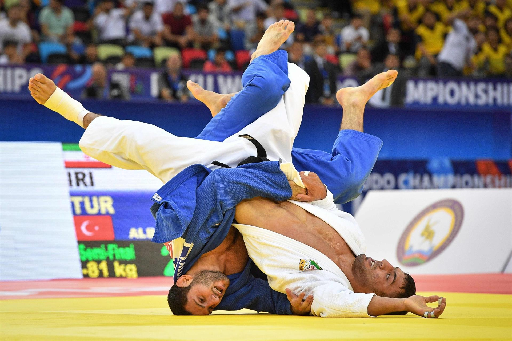

Judo is een van oorsprong Japanse zelfverdedigingskunst, die rond 1882 werd ontworpen door Jigoro Kano. Het woord betekent 'zachte weg', waarbij het woordje do verwant is aan tao en naast de betekenis 'manier' ook de connotatie heeft van 'levenspad'. Een beoefenaar van het judo heet een judoka. Judo is een sport die wereldwijd beoefend wordt en tevens een olympische sport is.
Bij het bedenken van judo werd geput uit de rijke Japanse traditie aan vechtkunsten. Combinaties van klemmen en worpen werden echter uit het repertoire weggelaten: die kunnen gevaarlijk zijn, als de partner de techniek van het meerollen onvoldoende beheerst (in bijvoorbeeld het tai-jutsu spelen juist die technieken een belangrijke rol). Oorspronkelijk was Judo een zelfverdedigingskunst. Jigoro Kano had bij het ontwerpen van de sport, die ontleend is aan oudere verdedigingskunsten als jiujitsu, ook nadrukkelijk een training van de geest voor ogen. Zijn filosofie wordt gekenmerkt door twee begrippen: Seiryoku Zenyo (Maximale effectiviteit met minimale inzet): wat een persoon doet, moet met optimale inzet van geestelijke en lichamelijke energie gebeuren. In het judo leert men de kracht van de tegenstander te gebruiken om hem ten val te brengen. In het leven is dit het principe van de juiste dingen doen op het juiste moment. De tweede, Jita Kyoei (Wederzijds profijt en welbevinden): de deelnemers dienen respect te hebben voor zichzelf en voor anderen. Bij het beoefenen van het judo leren ze samen te werken om zich de vaardigheden eigen te maken. Zonder tegenstander om mee te judoën kan men de sport immers niet leren; men werpt zelf en wordt op zijn beurt geworpen. Deze opvatting van samenwerkend leren is ook in andere gebieden van het leven geldig.
In een judowedstrijd kunnen door succesvol uitgevoerde technieken de scores: ippon of waza-ari worden verdiend. Balansverstoringen die niet tot een succesvolle techniek leiden en houdgrepen van 9 seconden of korter (zogenoemde kinza) krijgen geen formele waardering, maar worden wel door de scheidsrechter onthouden om bij een gelijkspel de doorslag te kunnen geven bij het aangeven van de betere judoka. Tot 1 maart 2017 kon ook een yuko (5 punten) toegekend worden, maar bij de nieuwe judowedstrijdregels is deze score afgeschaft. De koka (3 punten) was al eerder afgeschaft.
Punten in een tabel (punten worden gebruikt bij het administreren van het gevolg van een wedstrijd door de wedstrijdleiding):
| Naam punt | Waarde | Betekenis van de naam |
|---|---|---|
| Waza-ari | 7 | Er is techniek |
| Ipon | 10 | Een heel punt |
Judoka's worden bij wedstrijden naar leeftijd en gewicht ingedeeld. De indeling naar leeftijd kent de volgende categorieën. De categorie '12-' of U12 bevat de judoka's die op 31 december van het jaar waarin de wedstrijd plaatsvindt nog geen 12 jaar oud zal zijn. De categorie '15-' of U15 bevat de judoka's die op 31 december van het jaar waarin de wedstrijd plaatsvindt nog geen 15 jaar oud zal zijn. Het bovenstaande betekent dus dat wanneer een elfjarige judoka op 1 januari aan een toernooi mee wil doen en hij op 30 december 12 jaar oud wordt, deze dan mee moet doen in de 15- categorie. De wedstrijdduur hangt af van de competitie waarin men speelt. Voor senioren duurt een wedstrijd 5 minuten met een eventuele verlenging. Voor junioren duurt een wedstrijd 2 tot 4 minuten afhankelijk van de leeftijd. De indeling naar gewicht kent momenteel zeven categorieën en kan nog variëren naargelang de leeftijd
| Mannen | Onder de 60 kg | 60-66 kg | 66-73 kg | 73-81 kg | 81-90 kg | 90-100 kg | Boven 100 kg |
|---|---|---|---|---|---|---|---|
| Vrouwen | Onder de 48 kg | 48-52 kg | 52-57 kg | 57-63 kg | 63-70 kg | 70-78 kg | Boven 78 kg |
Judo hecht een grote waarde aan veiligheid. Daartoe is er een apart jeugdreglement ontwikkeld voor de categorie 12-. Een aantal van de afwijkingen van het normale reglement staat hierboven al genoemd, de volledige lijst van afwijkingen is: